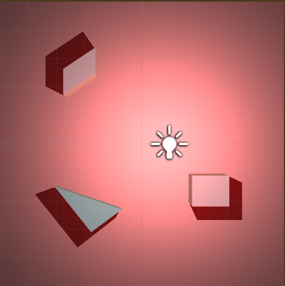
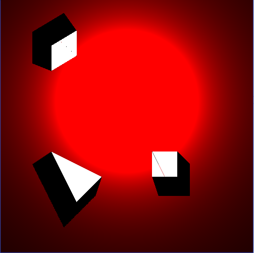
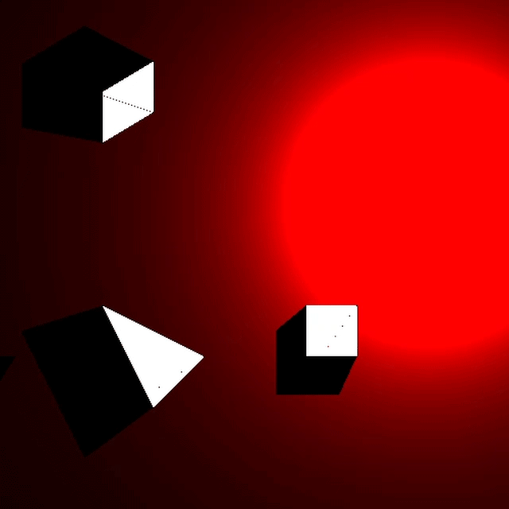

快速阴影技术展示
设计:
-
“快速阴影”技术的目的是为俯视视角的2D游戏提供快速的阴影解决方案。利用阴影创造出2D图形存在于3D空间的错觉。
“快速阴影”技术可以创造出类似3D阴影，但同时只需2D阴影的计算量。
技术特点:
-
“快速阴影”改变传统2D阴影的计算方式来创造类似3D阴影的效果。
传统2D阴影:

3D游戏引擎中的3D阴影:
“快速阴影”利用2D算法创造的类似3D阴影:
 -
“快速阴影”采用我设计的“相邻像素猜测”技术，提升运算速度可达100%。
开启“相邻像素检测”:

关闭“相邻像素检测”:

制作人员:
- 朱葛 - 设计, 编程, Team Leader
- 俏皮不俏皮 - 编程
- 郭诗萌 - 编程
- 范文琦 - 编程